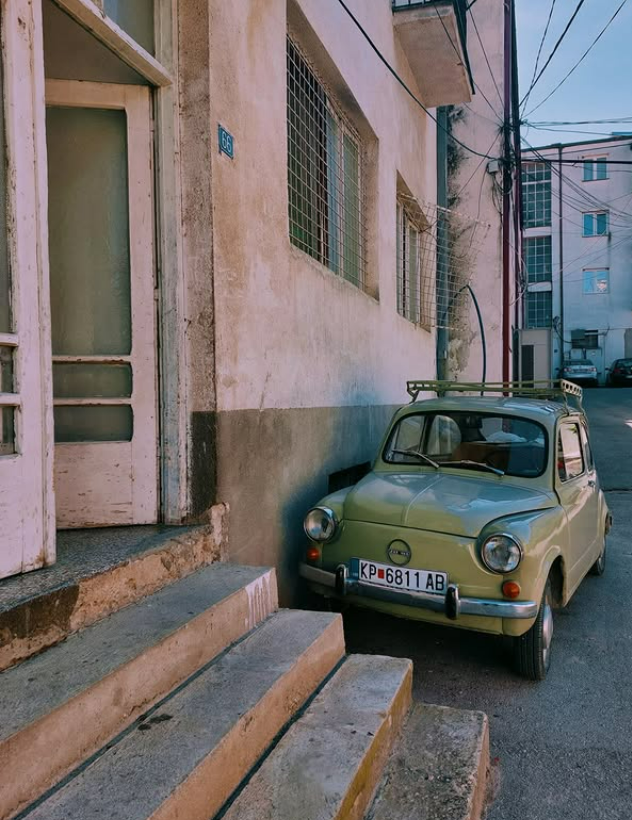
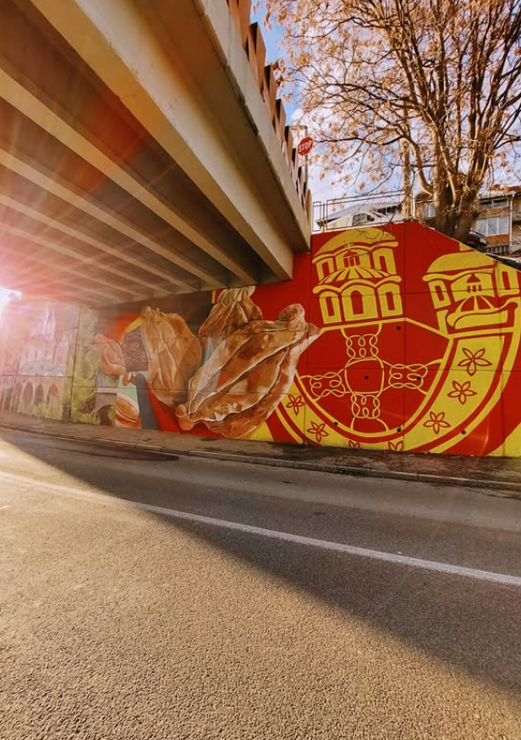
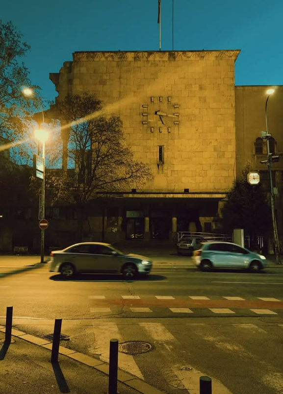
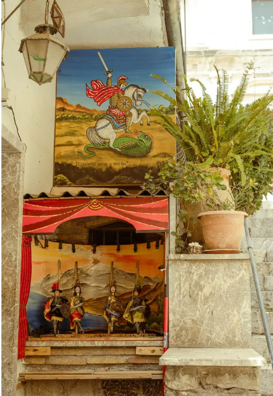
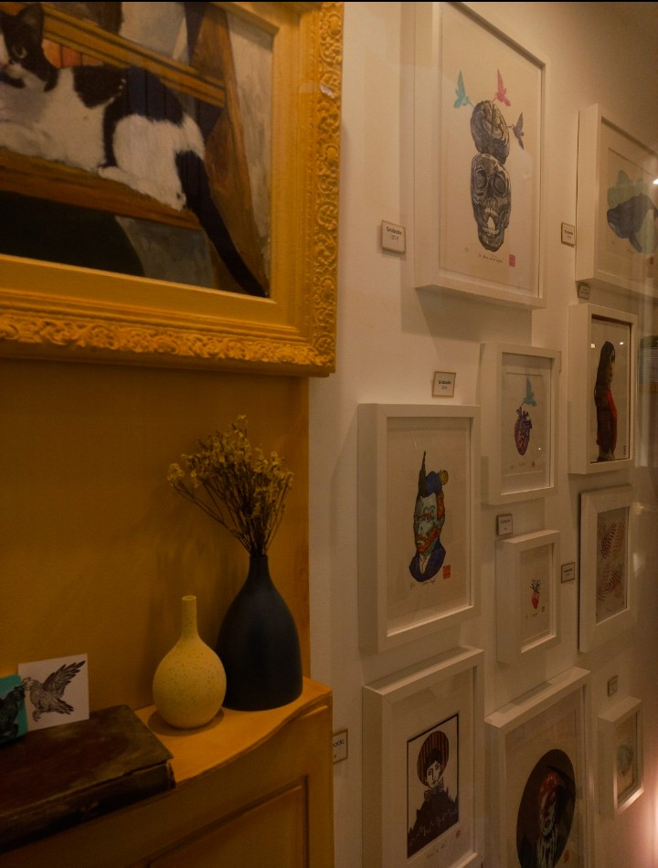
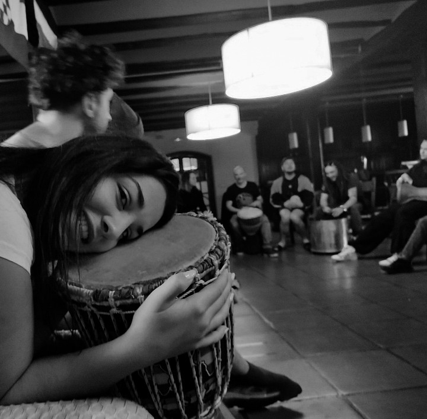
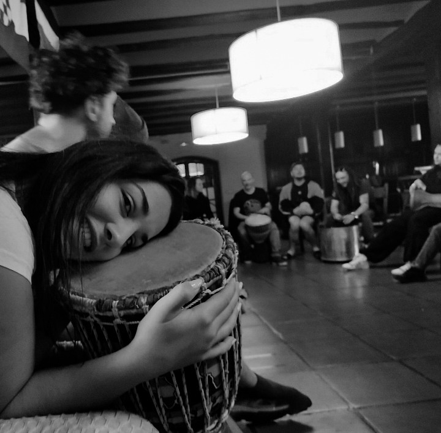

About Me
Hey! I’m Ilina Todorovska, and I’ve been into photography ever since I was a kid, messing around with the old cameras we had at home. I’m not even close to being a pro — I just enjoy capturing moments when they feel right. I like experimenting with editing too, trying out different styles just for fun. This site is where I share a some of the photos I love and hopefully inspire someone else to pick up a camera and start creating.
Gallery

- 
- 
- 
- 
- 
The Gear I Use
Nikon D5300
I usually take photos with a Nikon D5300, a DSLR camera that offers great image quality and flexibility. With its built-in Wi-Fi and solid performance, it’s perfect for both learning and getting creative. I bring it with me when I travel. I pair it with lenses like the 18–55mm for everyday use and the 50mm f/1.8 for sharper, more focused shots.
 

Sony DSC -W830
Sometimes I go for something super compact, like the Sony DSC-W830. It’s a small point-and-shoot camera that’s easy to carry and perfect for spontaneous shots. With 20.1MP and 8x zoom, it still manages to capture nice details without the bulk of a DSLR.
Fujifilm Instax Mini 12
When I just want to have fun with photography — that’s where my Fujifilm Instax Mini 12 comes in. It’s perfect for casual moments with friends, and the best part is that you get a printed photo right away. No editing, no filters — just instant memories you can hold in your hand.
My Phone
Even though I prefer using my camera, I still enjoy taking photos with my phone sometimes — especially when the moment happens fast. Today’s phones have surprisingly good cameras, and sometimes the best shot is simply the one you didn’t plan.
Tips & Tricks
Lighting Matters
Always look for good natural light. It makes a huge difference, especially in portraits.
Use the Rule of Thirds
Try placing your subject off-center to create more balanced and interesting photos.
Edit with Intention
Don’t overdo filters — small adjustments in brightness, contrast, and sharpness can go a long way.
Clean Your Lens
It sounds simple, but even a little smudge can ruin an otherwise perfect shot.